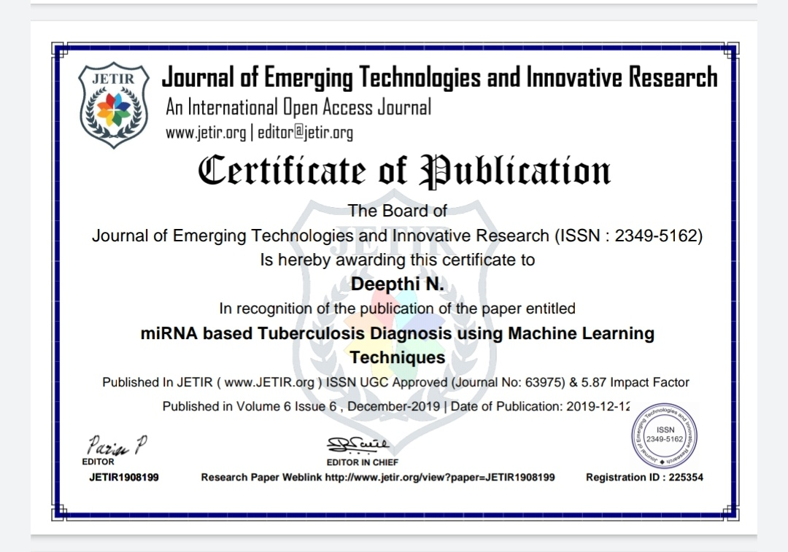

Diseases like Tuberculosis are widespread in developing countries not only because they are difficult to treat but also are a consequence of years of inadequate diagnosis and treatment. Many Machine learning based diagnosis methods have been proposed using clinical classification like age, gender etc. But there have not been many methods using biomarkers like MiRNA.
The project proposes a diagnosis technique for Tuberculosis using miRNA as a biomarker. The transcriptional signatures of both healthy and affected individuals are generated to construct a reference map using machine learning techniques, which is then used for the diagnosis of TB in the new patient. Our project allows a user to upload the MiRNA profile of a new patient, which is processed and a final diagnosis is displayed to show which cluster the patient belongs to.
Our algorithm gave a 99 percent accuracy in diagnosis of the TB for the test data, which comprised of real MiRNa profiles of 5 new patients.A limitation of the proposed method is that it is has been implemented and tested with a marginally small (train=15, test=5) number of subjects, and that the true prowess of the MST clustering algorithm implemented on a larger dataset cannot be predicted
Future enhancement and application of the method discussed in this model is that the progression of the treatment can be better and easily studied by using real-time mapping of the current state with the existing reference maps. In addition, a provision to externally validate the results generated using medical diagnosis can make the system even more intelligent.
Our work has been published in the Journal of Emerging Technologies and Innovative Research.(JETIR June 2019, Volume 6, Issue 6).
